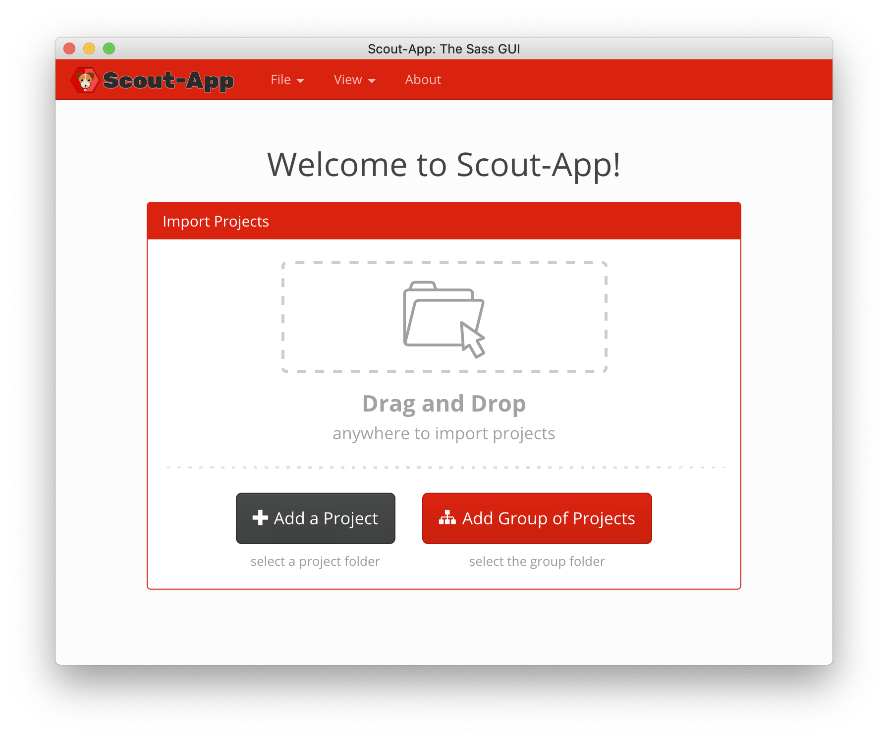
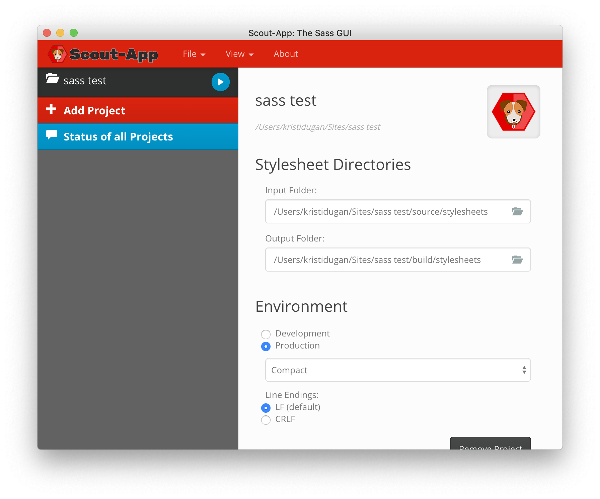

Simple Sass Compiling
If you’ve been writing your own HTML and CSS for a while, you’ll know that the larger the project, the more difficult it can be to keep your CSS nice and organized. Maybe you’ve done some online tutorials to learn Sass (short for syntactically awesome style sheets), but how do make the jump from in-browser tutorials to using it in your own projects?
Compile? I Thought CSS was Front-End!
Once you have your .scss file written, you’re not quite ready to upload to the server.
Since Sass is not understood natively by the browser, first it needs to be converted to format that
can be read. This step is called preprocessing. When you use a preprocessor on an .scss
file, it takes that file and compiles it into a regular .css file which can be read by
the browser
just as if you had written it by hand.
The resulting .css file is the one you upload and link to in your HTML.
Options
The preprocessing step can be done in one of two main ways: either via the command line, or by using an application to handle it for you.
Command Line
When installing Sass on the command line, you will need some familiarity using Node.js and npm or another package manager such as Homebrew for Mac. For beginners this can be intimidating and really slow things down when all you want to do is try out some styling using Sass. Luckily, there is another option.
Applications
There are a number of applications (paid or free) that can be used to compile your Sass without
opening the terminal. Some, like CodeKit, are
more all-in-one solutions that in addition to
preprocessing Sass can also do post-processing tasks such as running Autoprefixer or Babel. But if you
want something simple for your Sass experiments, Scout-App is a free tool for Windows, Mac and Linux
that does one thing: it watches for changes in your .scss files and compiles them to
.css on save.
Super easy!
Walkthrough Using Scout-App
- Download Scout-App from https://scout-app.io/
- Click the Add a Project button 
- Choose your Input Folder (the location of your
.scssfile(s))  - Choose your Output Folder (where the
.cssshould go) - Select your desired Environment settings (for example, compact the CSS for production)
- Click the blue triangle to run.
Now whenever you save the .scss file, Scout will automatically compile it into
.css!
Go Forth and Be Sassy!
If you are just getting your feet wet in the world of CSS preprocessors, you don’t have to take a
detour and become an expert on npm if you’re not ready for it. Thanks to some GUI applications, the
benefits of writing .scss are within your reach for your own learning and personal
projects.
Resources

Kristi Dugan
Kristi Dugan has been a Front-End Web Developer since the early days of CSS. She has helped companies small and large expand their web presence in the areas of arts education, online learning and healthcare. With an enthusiasm for researching and utilizing web technologies, she excels at solving the problem at hand in the most fitting manner for both the client and end user. Her background in the arts, language, and business has aided her career in technology by giving her an appreciation for good design and the ability to communicate effectively with stakeholders of varying levels of technical expertise. Kristi is currently working with a group of women in the Moms Can Code School, which helps mothers gain the skills necessary to work remotely while still being there for their family. When not studying to become a Full-Stack JavaScript Developer, she enjoys spending time with her husband and three young children. You can find out more about Kristi at kristidugan.com.Learn Digital Skills
Find out when the next cohort begins!
The most comprehensive program to up your game in the remote career world.
Learn More